Me (Lead UX Designer)
Olivia V (UX Designer)
Sean M (Engineering Lead)
Sep - Oct 2021
It is common for organizations to create or purchase datasets to support business decisions. When an organization owns thousands of datasets, there needs to be a way to manage how they are used.
I was tasked to redesign the members experience. This is where members of the organization are added to the catalog. Permissions are assigned to each member which restrict what actions they can perform within the platform.

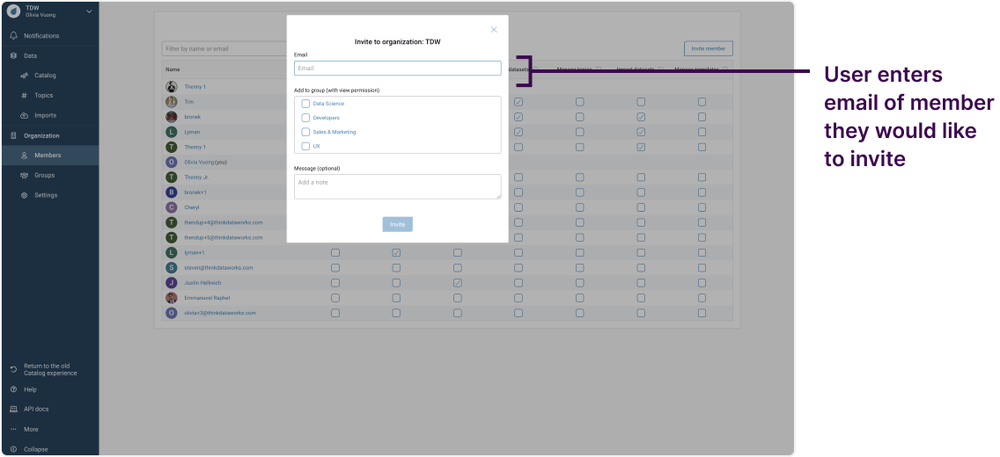
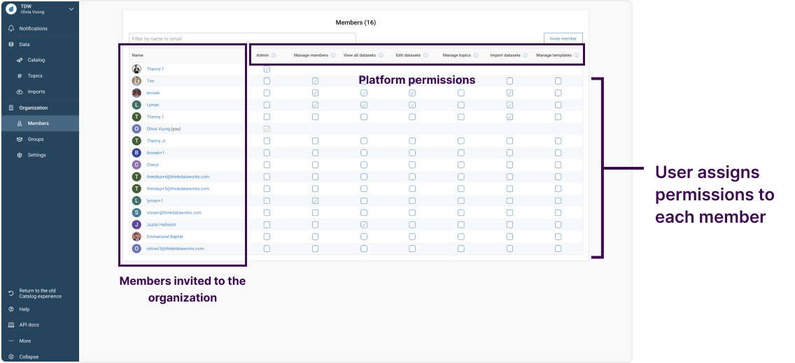
Members are invited one member at a time.
Members are assigned permissions one member at a time.
Users cannot discover which members have a particular set of permissions.
Permissions can be assigned by users ad-hoc.
When the user sets up the organization, there are several members that must be added at once. Bulk invitation reduces the number of actions required to invite members to the organization.
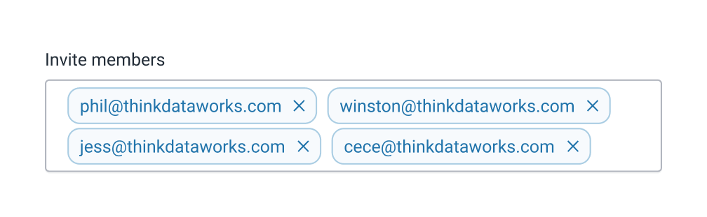
Instead of assigning each individual member ad-hoc permissions, roles will set boundaries around the permissions each member can have.
Grouped permissions reduce the number of actions required to assign permissions to new members.
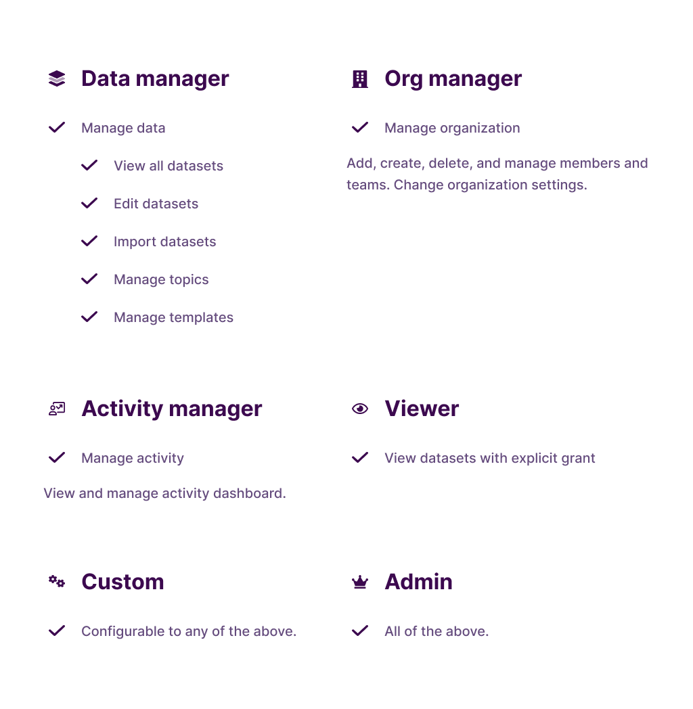
Roles are discoverable and easy to scan.
User can compare permissions between roles.
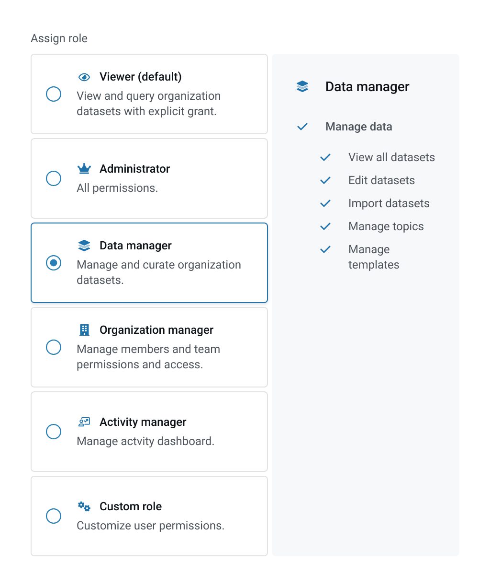
The dropdown hides roles, making them less discoverable.
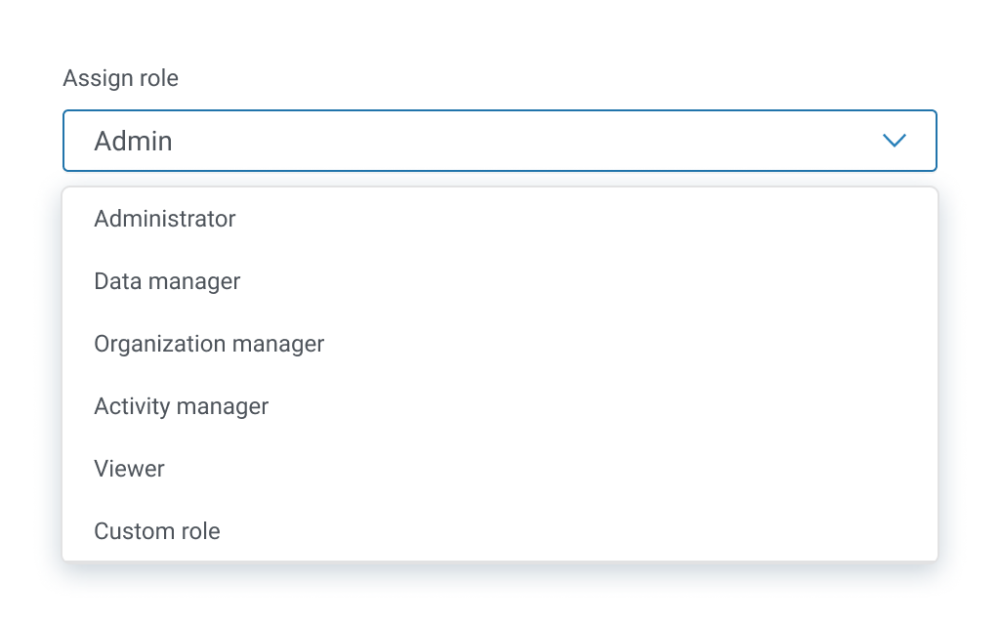
Improves discoverability of members’ permissions.
Each member is associated with their respective roles which have a unique set of permissions.
Members with the same permissions are grouped together.
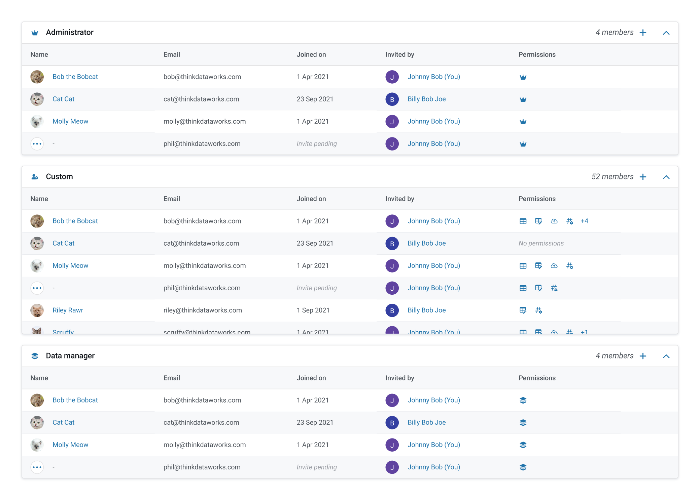
An option to list all members & group them by role means members are not grouped into their roles by default.
Accordions hide the majority of members, making them less discoverable.
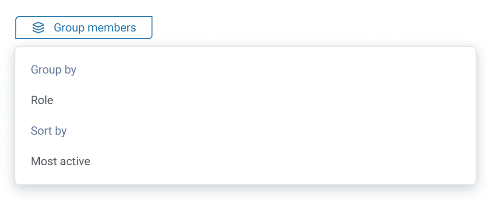
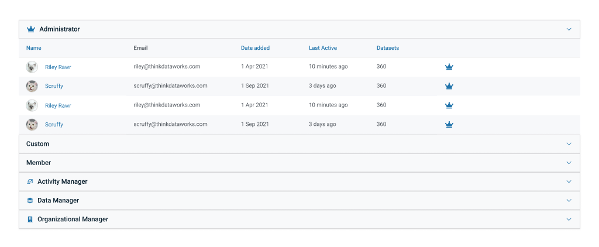
It was important that the administrator role was most visible because administrators will have the most power within the data catalog.
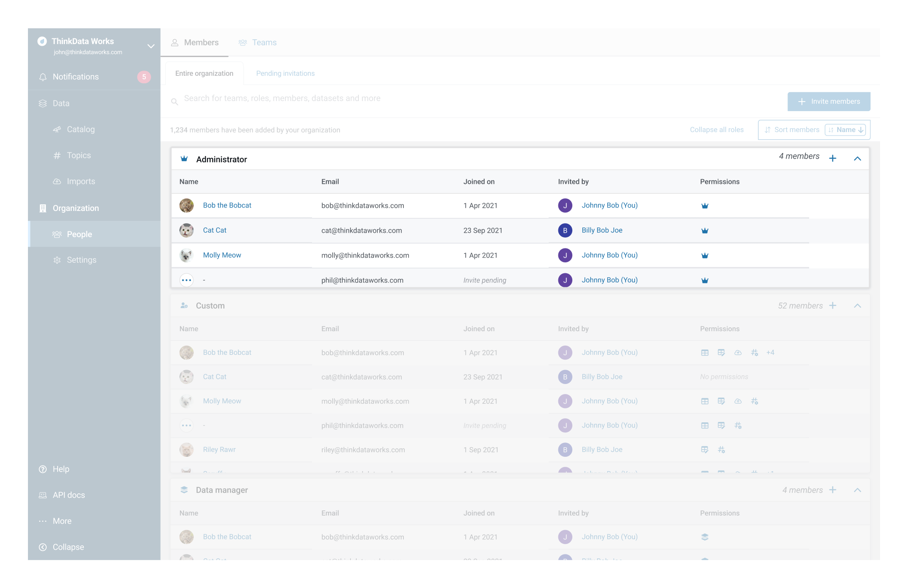
Past iterations made the custom role most visible because this was the role where ad-hoc permissions could be assigned resulting in the potential for poor governance. However, because most custom roles have just a few permissions, it became secondary to the administrator role.
Just a name in the table will not provide much context about the member, so using the popover to provide additional information allows the user to govern accordingly.
The popover was an existing design component.
Navigationally, the popover is a good option because the user does not lose context of their previous position in the platform.
The user can quickly click through multiple members.
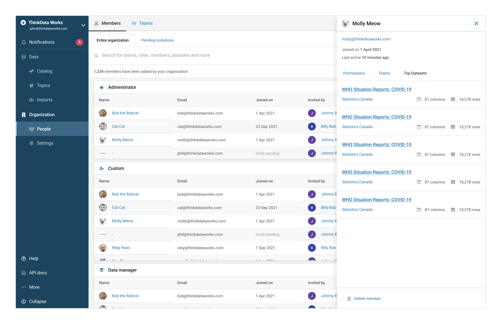
Permissions were now grouped into roles, so it was important for the permissions associated with each role to be listed somewhere on the platform.
For custom roles, listing the permissions within the table makes them more discoverable.
It is easy to see which members have the most permissions.
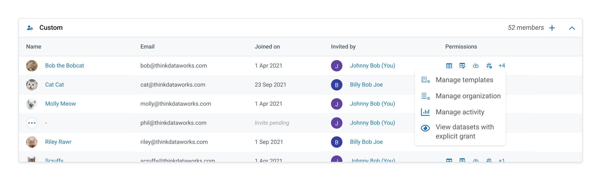
Over the course of this project, I had several design reviews and opportunities for feedback from various stakeholders. It was important for me to consolidate this feedback in a methodical way. I developed a method to organize my feedback in three categories: small UI changes (styling, etc.) that didn’t require much exploration, bigger changes that required exploration & design options, and changes that needed more answers before I could explore further (either from engineering or the product team).
At a smaller B2B startup, I didn’t have the opportunity to talk to our clients directly. I would typically see this as a setback, but I think the key is to adapt. For example, I can have conversations with the product director or look into competitors. In this environment, I relied more on our company’s value propositions of discoverability and governance to develop design goals.
Even though our company wasn’t at a stage where we had quantitative or qualitative data, we would be soon! This project made me realize that the product is always evolving and what I design today (even without research) will be used for research in the future. Therefore, my goal as a designer at this stage of our product lifecycle is to determine what questions need to be answered and create designs that are conducive to answering those questions.
© Coded with luv by jennyfurhe